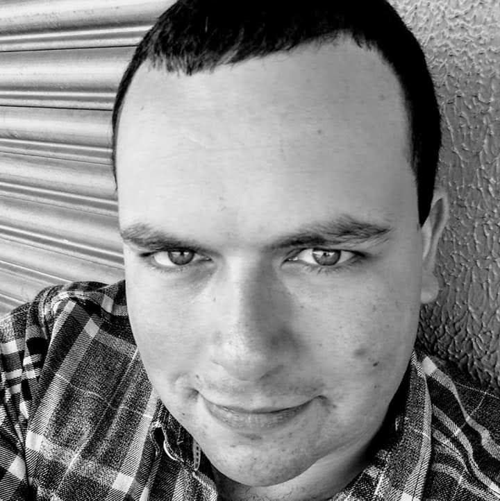

Bio

Sou Lucas da Silva Gonçalves. Atualmente me encontro em um período de transição de carreira.
Originalmente minha formação foi focada na área da construção civil, porém apesar da conclusão recente do ensino, não me vi realizado na área, mesmo durante o período de formação.
Encontrei um novo mundo na área tech, considerando minha afinidade prévia por tecnologia, acredito que os conteúdos relativos à desenho e experiência de usuário da arquitetura podem me ajudar muito nesse processo de transição para o front-end.
Me considero uma pessoa muito comunicativa e generalista, aprecio boas conversas, dinâmicas em grupo e colaboração, tanto para o meu aprendizado como dos meus colegas.
Meu Norte atual é o aprendizado e desenvolvimento, para atingir a tão sonhada inserção do mercaado de trabalho.
Formação Acadêmica
Faculdade de Arquitetura e Urbanismo (UFPel)
2013 - 2023
O nível superior foi cursado na Universidade Federal de Pelotas, com o curso de Arquitetura e Urbanismo.
As áreas mais focadas durante o curso, foram as áreas de Urbanismo e Modelagem 3D com renderização foto-realista.
Técnico em Edificações (IFSul - Campus Pelotas)
2009 - 2013
O período do ensino médio foi marcado pela integração com o curso técnico em edificações.
Ensino Fundamental (Colégio Municipal Pelotense)
2001 - 2009
O período do ensino fundamental foi integralmente cursado em escola pública, no maior colégio da américa latina, da primeira a oitava série.